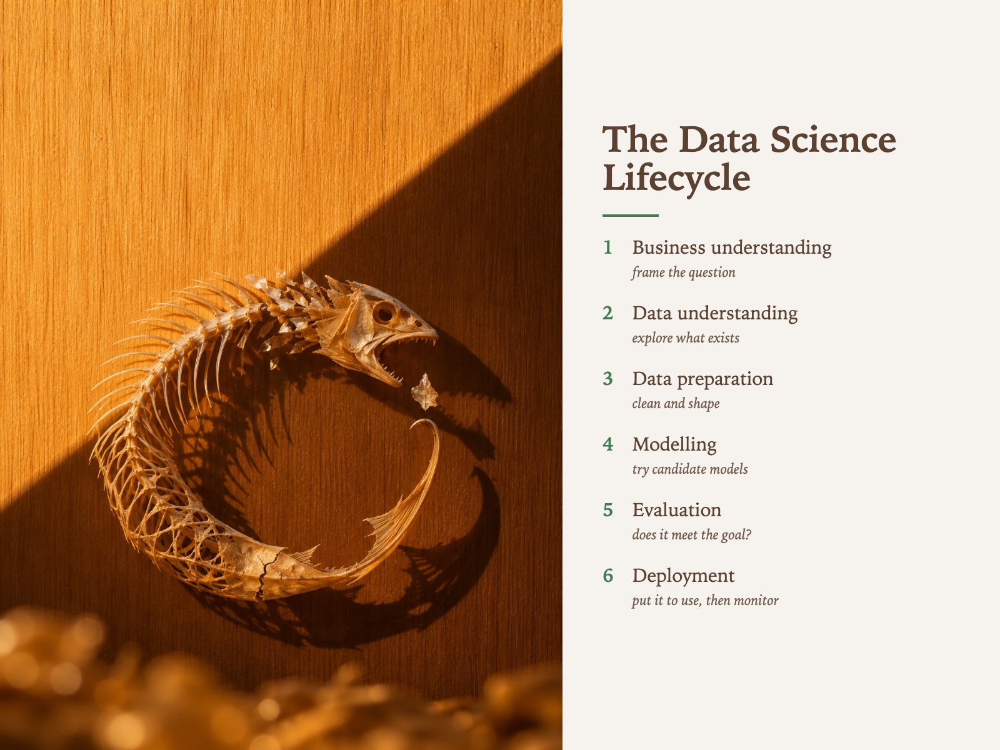

Style Vault / Gallery / Pressed By Sunlight
Pressed By Sunlight
SV-066

Example: The data science lifecycle, set in Pressed By Sunlight
In plain words
A dried, flat found object - a dragonfly wing, a fish skeleton, a torn banknote - held against a warm wall by one sharp edge of sunlight, with its shadow as important as the object. It feels still, warm and slightly melancholy, like a specimen in a museum drawer. What makes it this style is the one straight beam of light and the shadow standing beside the thing as its equal. Best for: lessons from failed projects; reflective personal essays; legacy systems and retirement; gallery pieces on memory. Avoid: text or lettering generated inside the image.
Topics it fits
- Lessons from failed projectsa dry, finished specimen under one clear light suits a calm look back at what did not survive
- Reflective personal essaysthe shadow as co-subject gives the piece a second voice that matches a thoughtful post
- Legacy systems and retirementa dead but beautiful specimen frames decommissioning with respect rather than blame
- Gallery pieces on memorya weightless object pinned by nothing but light makes a strong single image for a quiet wall
Art style and layout
- core locked [shadow_is_co_subject, one_straight_light_edge, one_warm_family_no_cool, vertical_grain_ground, deep_foreground_bokeh, specimen_is_dead_and_flat]
- the tension a thing with no substance pinning a thing with no life. The leaf is weightless, dry and finished; the beam that holds it against the wall is nothing at all. If either the specimen looks alive or the light looks soft, there is no card left
- shadow is co subject THE SIGNATURE, and the thing a model will quietly drop. The cast shadow must be sharp, separate, and roughly as visually loud as the specimen - say *"its own cast shadow thrown sharp onto the wood beside it, reading as strongly as the specimen itself"* every time. A soft contact shadow means the card failed
- one straight light edge a hard straight diagonal boundary between lit wall and dark wall. This is what makes it graphic rather than pretty. If the wall lights evenly, it becomes stock photography of a leaf
- one warm family no cool honey to umber and nothing else. One cool reflection kills it - the same rule SV-045 carries, arrived at from the opposite direction (daylight, not candlelight)
- vertical grain ground the grain runs vertically and the shadow edge runs diagonally, so the two line systems disagree. That disagreement is doing real work; a plain plaster wall removes it
- deep foreground bokeh large soft amber discs along the bottom edge, well out of focus, same specimen repeated. Gives depth to what is otherwise a flat wall and stops it reading as a scan
- specimen is dead and flat dried, pressed, shed, discarded. Not ten pretty botanicals - see the axis line. Translucency is the price of entry: the light has to get partway through
- palette [lit wood "#C8A06A, shadowed wood "#7A5636, deep ground "#2E2015, dried leaf gold "#E0B858, leaf highlight "#F2D593, foreground bokeh "#D9A84E]
- negative space the empty lit wall in the top half, and the dark plane on the right. Both are load-bearing - crop them out and the card is a close-up of a leaf
- era reference Japanese domestic still-life photography and the botanical-pressing tradition, shot as available light rather than as a studio set. Do not name a living artist
What must stay, what may change
subject - ten far-apart FOUND FLAT THINGS held against the same lit wall (a dragonfly wing, a fish skeleton, a cicada shell, a torn banknote, a shed snake skin, a dried squid, a maple key, a moth, a sheet of pressed seaweed, a used tea bag opened out). NOT ten leaves and NOT ten pretty botanicals - the wall, the beam and the shadow stay locked verbatim, only the specimen moves. Every candidate must have a silhouette with internal structure, because the shadow is doing half the drawing
As JSON
Paste this into a prompt or a skill to reuse the style.
{
"id": "SV-066",
"name": "Pressed By Sunlight",
"audience": [
"gallery"
],
"category": [
"photography"
],
"format": [
"card",
"style-study"
],
"maker": "diffusion",
"keep_and_swap": "**subject - ten far-apart FOUND FLAT THINGS held against the same lit wall** (a dragonfly wing, a fish skeleton, a cicada shell, a torn banknote, a shed snake skin, a dried squid, a maple key, a moth, a sheet of pressed seaweed, a used tea bag opened out). NOT ten leaves and NOT ten pretty botanicals - the wall, the beam and the shadow stay locked verbatim, only the specimen moves. Every candidate must have a silhouette with internal structure, because the shadow is doing half the drawing",
"style_dna": {
"core_locked": "[shadow_is_co_subject, one_straight_light_edge, one_warm_family_no_cool, vertical_grain_ground, deep_foreground_bokeh, specimen_is_dead_and_flat]",
"the_tension": "**a thing with no substance pinning a thing with no life.** The leaf is weightless, dry and finished; the beam that holds it against the wall is nothing at all. If either the specimen looks alive or the light looks soft, there is no card left",
"shadow_is_co_subject": "THE SIGNATURE, and the thing a model will quietly drop. The cast shadow must be sharp, separate, and roughly as visually loud as the specimen - say *\"its own cast shadow thrown sharp onto the wood beside it, reading as strongly as the specimen itself\"* every time. A soft contact shadow means the card failed",
"one_straight_light_edge": "a hard straight diagonal boundary between lit wall and dark wall. This is what makes it graphic rather than pretty. If the wall lights evenly, it becomes stock photography of a leaf",
"one_warm_family_no_cool": "honey to umber and nothing else. **One cool reflection kills it** - the same rule SV-045 carries, arrived at from the opposite direction (daylight, not candlelight)",
"vertical_grain_ground": "the grain runs vertically and the shadow edge runs diagonally, so the two line systems disagree. That disagreement is doing real work; a plain plaster wall removes it",
"deep_foreground_bokeh": "large soft amber discs along the bottom edge, well out of focus, same specimen repeated. Gives depth to what is otherwise a flat wall and stops it reading as a scan",
"specimen_is_dead_and_flat": "dried, pressed, shed, discarded. **Not ten pretty botanicals** - see the axis line. Translucency is the price of entry: the light has to get partway through",
"palette": "[lit wood \"#C8A06A, shadowed wood \"#7A5636, deep ground \"#2E2015, dried leaf gold \"#E0B858, leaf highlight \"#F2D593, foreground bokeh \"#D9A84E]",
"negative_space": "the empty lit wall in the top half, and the dark plane on the right. Both are load-bearing - crop them out and the card is a close-up of a leaf",
"era_reference": "Japanese domestic still-life photography and the botanical-pressing tradition, shot as available light rather than as a studio set. **Do not name a living artist**"
},
"elements": {
"subject": "**one dried, flat, structural found object** pressed against a wall - never a fresh plant, never a styled bouquet. It must be past its life and thin enough for light to half-pass through",
"composition": "**vertical 9:16, and the subject sits low.** The top half is empty lit wall. One straight diagonal shadow edge runs corner-wards and splits the wall into a lit plane and a dark plane. The specimen crosses that edge or sits just inside the light",
"light": "**one low hard raking sun, no fill.** The light is the subject. Its edge must be a clean straight line, not a soft gradient - a window frame or a door jamb is implied but never shown",
"palette": "**one warm family end to end** - honey, wheat, amber, deep umber. No cool tone, no green, no grey. The contrast is lit-warm against dark-warm, never warm against cool",
"material/texture": "**vertical wood grain as the whole ground** - fine, regular, slightly fibrous, holding the light in long parallel streaks. The specimen is dry, veined, semi-translucent, faintly crumpled",
"mood": "quiet, still, late in the day, nobody in the room. Domestic rather than curatorial - this is a wall, not a studio sweep",
"camera/render": "macro photograph at f/2-ish, subject plane sharp, a deep out-of-focus foreground of large amber discs along the bottom edge, no grade, no vignette, no bloom"
},
"palette_hex": [
"#c8a06a",
"#7a5636",
"#2e2015",
"#e0b858",
"#f2d593",
"#d9a84e"
],
"topics": [
{
"topic": "Lessons from failed projects",
"why": "a dry, finished specimen under one clear light suits a calm look back at what did not survive"
},
{
"topic": "Reflective personal essays",
"why": "the shadow as co-subject gives the piece a second voice that matches a thoughtful post"
},
{
"topic": "Legacy systems and retirement",
"why": "a dead but beautiful specimen frames decommissioning with respect rather than blame"
},
{
"topic": "Gallery pieces on memory",
"why": "a weightless object pinned by nothing but light makes a strong single image for a quiet wall"
}
]
}